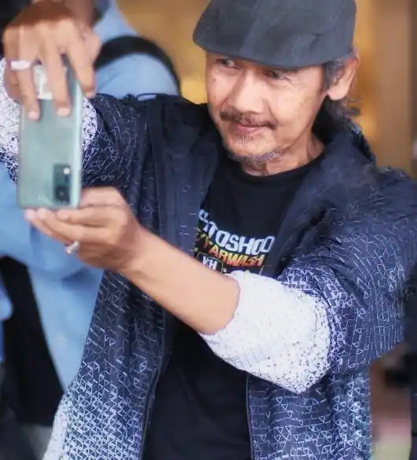

Fotografer N2SP dari Bandung

Deddi Koesnaedi adalah fotografer asal Bandung yang menjadi bagian dari komunitas N2SP (Ngopi Ngopi Sambil Phopotoan). Ia telah mengikuti berbagai kegiatan fotografi sejak tahun 2022 hingga sekarang.
Nama: Deddi Koesnaedi
Kota: Bandung
Status: Fotografer, partisipan event N2SP
Deddi Koesnaedi berpartisipasi dalam beberapa event fotografi, di antaranya:
Sejak tahun 2022, kehadirannya dalam kegiatan ini menjadikannya salah satu kontributor visual dalam dokumentasi komunitas N2SP.
Deddi dikenal dengan gaya fotografi yang santai, natural, dan eksploratif. Ia tidak terpaku pada pose kaku, melainkan lebih memilih menangkap momen yang terjadi secara alami.
Pendekatan ini membuat hasil fotonya terasa hidup dan autentik, seolah penonton ikut berada di dalam momen yang diabadikan.
Dalam setiap event yang diikuti, Deddi tidak hanya hadir sebagai peserta, tetapi juga sebagai fotografer yang membawa sudut pandang berbeda.
Mulai dari konsep otomotif seperti Sexy Bikers, nuansa budaya di Mulih ka Desa, hingga eksplorasi visual di Swimsuit Photo Concept, kontribusinya membantu memperkaya dokumentasi visual komunitas.
Melalui Instagram, Deddi membagikan hasil karya dan perjalanan visualnya dalam dunia fotografi.
Deddi Koesnaedi merupakan salah satu fotografer yang telah menjadi bagian dari perjalanan komunitas N2SP. Dengan pendekatan visual yang natural dan penuh eksplorasi, ia tidak hanya menghasilkan foto, tetapi juga merekam pengalaman dalam setiap momen.